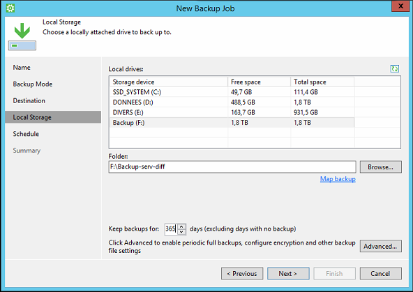
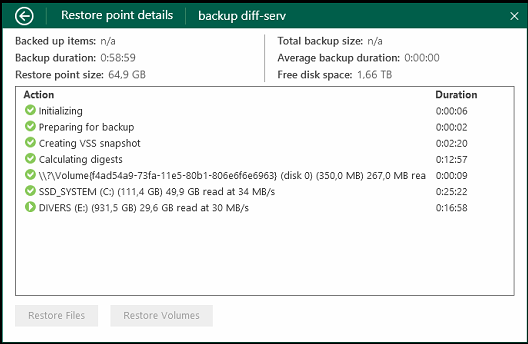
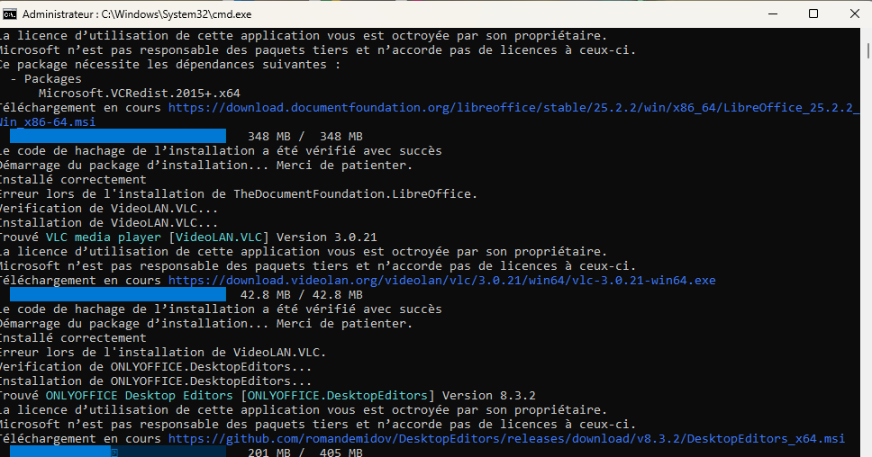

Résumé de la compétence :
Lors de mon stage chez Diff-info, j'ai été chargé de mettre à disposition des utilisateurs un service informatique fiable et réactif. Cela a impliqué la gestion des demandes d’assistance et des incidents, en veillant à ce que les utilisateurs aient accès aux ressources et aux outils nécessaires dans les plus brefs délais. J’ai pris en charge la résolution des problèmes techniques, tout en garantissant une qualité de service optimale et en respectant les délais de réponse définis.
Réaliser les tests d’intégration et d’acceptation d’un service
Lors de mon stage, j'ai participé à la réalisation de tests d’intégration et d’acceptation dans le cadre de la migration d’un serveur Windows 2012 vers Windows 2019. J'ai pris en compte les risques potentiels pouvant survenir pendant la transition, en mettant en place des sauvegardes préventives à l'aide de VEEAM Backup sur des disques externes. Cette démarche a permis de sécuriser les données critiques tout en garantissant une restauration rapide en cas de problème. Ces tests ont également assuré que le nouveau serveur fonctionnait correctement après la migration, validant ainsi la continuité et la fiabilité du service
 Déployer un service
Pendant mon stage, j'ai eu l'occasion de déployer un service en automatisant l'installation d'applications sur les PC vendus en boutique. Grâce à un script PowerShell que j'ai développé, j'ai considérablement optimisé le processus d'installation. Alors qu'il me fallait initialement 30 minutes pour configurer un seul poste, cette automatisation m'a permis de gérer jusqu'à quatre PC en une heure. Ce gain de temps a non seulement amélioré l'efficacité, mais a également standardisé les configurations, réduisant ainsi les erreurs humaines potentielles

Accompagner les utilisateurs dans la mise en place d’un service
Lors de ce stage, j'ai souvent été amené à accompagner les clients dans la mise en place de divers services. Par exemple, lorsque des clients (professionnels ou particuliers) venaient en boutique avec un problème, je commençais par échanger avec eux pour bien comprendre leur situation. Cela incluait un audit gratuit sur place (d'une durée de 1 à 4 heures pour les professionnels) afin d'évaluer l'état des machines et des installations. Une fois l'audit terminé, je proposais des solutions de maintenance ou de réparation, en discutant avec le client des différentes options possibles. Pour les professionnels, cela pouvait également aboutir à la mise en place de contrats de maintenance sur le long terme. Le devis final, basé sur une prestation forfaitaire de l'heure et un pré-diagnostic, permettait d'assurer une transparence totale.